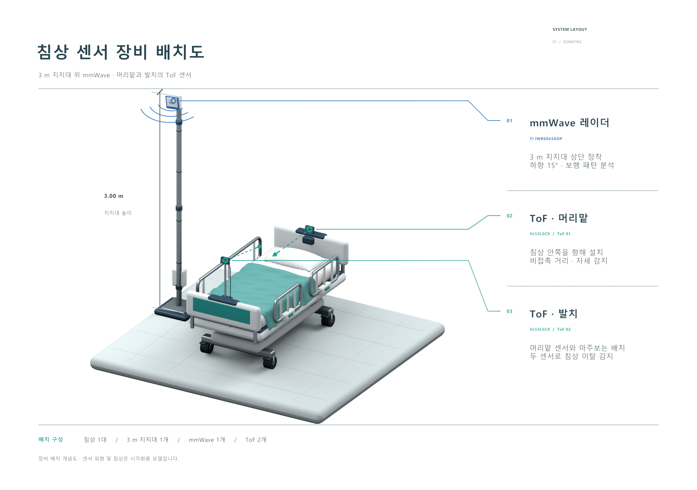
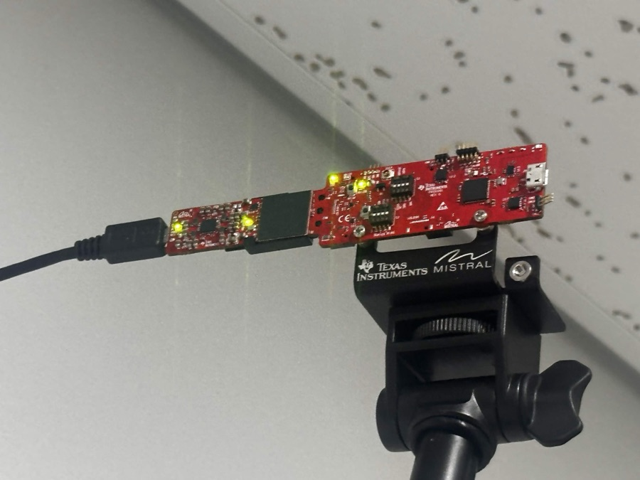
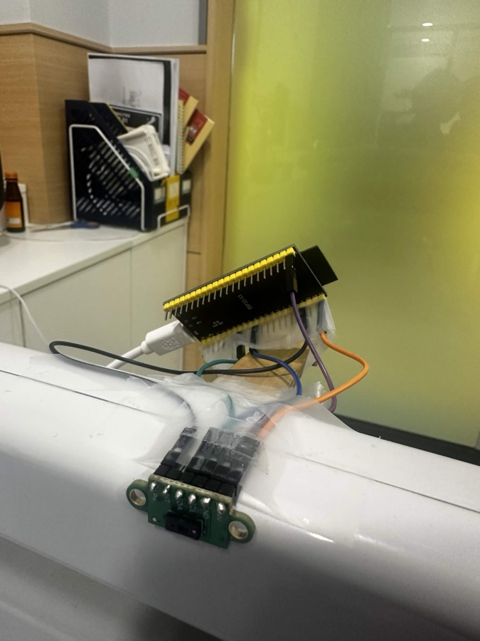
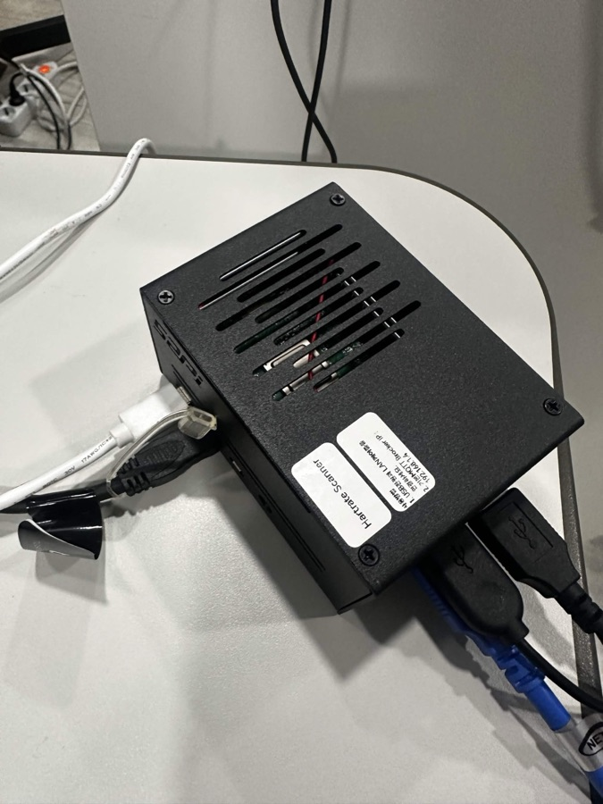
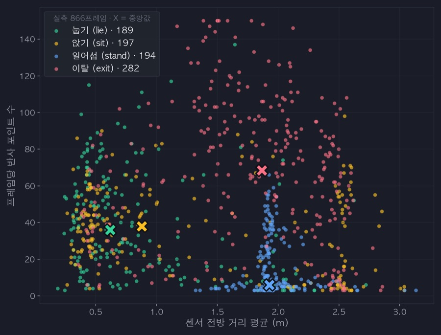
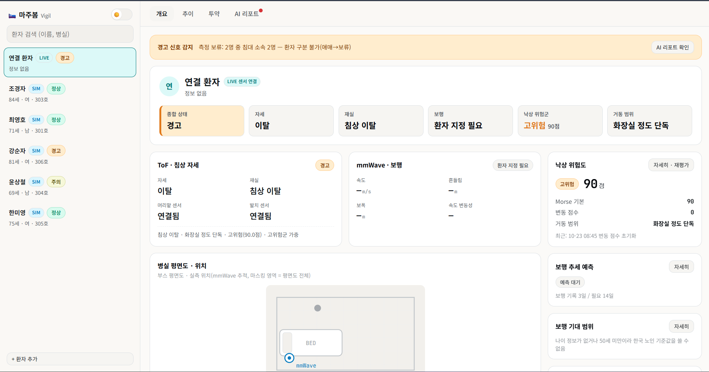

비접촉 센서융합 기반
치매환자 낙상예측시스템
비접촉식프라이버시 보호낙상 예측
기술개발 배경
2024년 말 초고령사회 진입 · 65세 이상 20%치매 노인 낙상 발생 · 일반 노인의 약 8배
01 · 빈도
매년 10건 중 4건
국내 요양병원 낙상사고 중
치매 환자 비율 (39.3%)
치매 환자 비율 (39.3%)
02 · 문제
낙상으로 인한 사망
고관절이 골절된 고령자 3명 중 1명은
1년 안에 사망합니다
1년 안에 사망합니다
03 · 영향
사회적 비용 증가
낙상 사망으로 인한 비용
연간 1조 2500억원
연간 1조 2500억원
출처: 국내 요양병원 최근 4년(2021–2024) 낙상사고 분석 — 치매군과 비치매군 비교 (KCI) · 8배: 홍선영·박희옥(2017) 메타분석의 재인용 수치
기존 방식과의 차이
기존 방식
제안 기술
카메라사생활 침해 우려 · 조명 변화에 취약
영상→비영상
비영상 센싱거리·위치 데이터만 수집 · 어두워도 동작
웨어러블착용 거부 · 분실 · 주기적 충전 필요
접촉→비접촉
비접촉 센싱침상 주변 설치 · 착용 불필요
사후 감지낙상이 일어난 뒤에 알림
사후→사전
사전 예측앉기 · 돌아눕기 · 난간 잡기 단계에서 미리 알림 (ToF + mmWave)
난간을 올려도, 어르신은 나오려 합니다
영국 치매 병동 9곳을 225일 동안 관찰한 연구에 실제로 기록된 장면입니다
관찰 기록 · 13일차 · 남성 4인실
양쪽 난간을 올렸지만
난간 끝으로 빠져나와 앉아 있었다
난간 끝으로 빠져나와 앉아 있었다
- 기록상 낙상 위험군, 1:1 관찰 대상
- 다리를 빼서 침대 발치와 난간 끝 사이에 걸터앉음
- 다시 눕혀 드려도 곧 또 나오려 함
관찰 기록 · 29일차 · 노인 병동
다리는 돌려 뺐지만 난간에 막혔고
호출벨에는 아무도 오지 않았다
호출벨에는 아무도 오지 않았다
- 앉아서 다리를 침대 밖으로 돌려 뺌
- 몸은 난간에 걸려 있고, 발은 바닥에 닿지 않음
- 호출벨을 눌렀지만 응답 없음
일부 환자는 난간을 넘으려 했고, 연구진은 이를 심각한 부상 위험으로 기록했습니다
난간을 넘다 떨어지면 더 높은 곳에서 추락해 부상이 심해집니다 (영국 의료기기 규제기관)
출처: Northcott 외(2026) NIHR HSDR 14(7) · 영국 NHS 9개 병동 225일 관찰 · MHRA, Bed rails: management and safe use (2023 개정)
시스템 구성

01
설치
요양병원 1인실
천장 · 머리맡 · 발치
천장 · 머리맡 · 발치
→


02
측정
비접촉 센서 2종
mmWave · ToF
mmWave · ToF
→

03
처리
Raspberry Pi 5
병실 내 수신 · 저장 · 분석
병실 내 수신 · 저장 · 분석
→

04
AI 예측
자세 분류 · 이탈 시도 판단
개인 기준 위험도
개인 기준 위험도
→

05
확인
간호사 대시보드
위치 · 자세 · 위험도
위치 · 자세 · 위험도
현재 설치: mmWave는 천장 2.7m에서 바닥 방향 · ToF는 머리맡과 발치 2개 (그림은 이전 지지대 설치)
ToF 센서 ST VL53L5CX · 머리맡 · 발치 2개
측정 원리
적외선이 반사되어 돌아오는 시간으로 거리 측정
측정 사양
8×8 멀티존FoV 65°최대 4 m
판단 항목
거리 측정
센서와 치매 환자 사이의 거리를 측정
자세 분류
빈 침대 · 바로 누움 · 좌측 누움 · 우측 누움 · 앉음 · 걸터앉음
실측 정확도 88.5% (참여자 6명 · 학습에 쓰지 않은 사람으로 시험)
실측 정확도 88.5% (참여자 6명 · 학습에 쓰지 않은 사람으로 시험)
난간 쪽 움직임
팔을 난간에 올린 상태 구분 91.4% (11/13 실험, 참여자 1~2명)
mmWave 레이더 TI IWR6843AOP · 천장
측정 원리
60–64 GHz 전파의 반사 신호로 사람의 위치·움직임 추적
측정 사양
시야각 120° × 120°천장 2.7 m바닥 방향
판단 항목
위치 추적
x·y 좌표로 위치와 이동을 실시간 추적
보행 지표
보행 지표 6종 산출 → 보행 속도·속도 변동·좌우 흔들림·정지 비율·보폭 변동·추정 보폭
이탈 전조
몸 중심이 침대 가장자리로 이동 · 돌아눕는 방향
낙상 감지
신체 높이 1.2 m 이상 급강하 → 즉시 위험
침대 이탈은 단계를 거쳐 일어납니다
노인 병동 침상 이탈 연구가 정리한 6단계 · 앞 단계에서 알수록 간호사가 올 시간이 생깁니다
1
상체
일으킴
일으킴
2
가장자리로
이동
이동
3
다리를
돌려 뺌
돌려 뺌
4
엉덩이를
끝으로
끝으로
5
발을
바닥에
바닥에
6
일어섬
마주봄이 보는 구간 · 자세 · 몸 중심 · 돌아눕기
허벅지 착용 센서가 반응하는 구간
노인은 이렇게 일어납니다
몸통을 돌리고 팔꿈치·엉덩이를 축으로 밀며 일어남
위험한 어르신은
동작이 끊기고 자세를 여러 번 고쳐 잡음 → 시간이 걸림
난간이 올라가 있으면
옆 대신 난간 끝으로 우회하거나 난간을 넘음
출처: Jähne-Raden 외(2019) INBED, Sensors 19:1017 · Alexander 외(1992, 1995) J Am Geriatr Soc · Northcott 외(2026)
이탈은 미리 알 수 있습니다
선행 연구 · 카메라 방식
28초중앙값
알림 후 실제 이탈까지 · 깊이카메라
환자 64명, 이탈 318건 (Kramer 2020)
환자 64명, 이탈 318건 (Kramer 2020)
7초 전정확도 86.5%
일반 카메라 + 딥러닝 예측 (Chwyl 2017)
넘는 순간민감도 96.8%
난간 넘기 포함 · 머리가 안전 영역을 벗어나면 경보
특이도 62.8% · 간호사 역할극 (Mao 2023)
특이도 62.8% · 간호사 역할극 (Mao 2023)
넘기 전 단계를
나눠 미리 예측한
연구는 찾지 못함난간 넘기는
넘는 순간 감지까지
나눠 미리 예측한
연구는 찾지 못함난간 넘기는
넘는 순간 감지까지
마주봄 실측 · 비영상 mmWave
11번 중 10번90.9%
난간 잡고 앉아 밖으로 도는 이탈 시도인지 판단
7번 중 6번
몸을 밖으로 / 안쪽으로 돌리는지 구분
10번 중 10번
팔을 난간으로 뻗는 순간 감지
마주봄 실측: 2026-11-13·14 팀원 연기 실험, 참여자 1~2명, 시도 하나씩 빼고 시험 — 일반화 전 단계 · 선행 연구는 다른 시스템의 결과 (Kramer 2020은 개발사 저자)
AI 모델 · 비교하고 고릅니다
딥러닝과 머신러닝을 같은 조건에서 비교해 더 정확한 쪽을 씁니다
| 판단 | 모델 | 결과 | 데이터 |
|---|---|---|---|
| 자세 분류ToF · 6가지 자세 | Random Forest머신러닝 · 채택 | 88.5% | 참여자 6명 · 111회 녹화 학습에 쓰지 않은 사람으로 시험 |
| CNN딥러닝 | 78.3% | ||
| 이탈 시도 판단mmWave | 로지스틱 회귀통계 | 90.9% | 참여자 1명 · 시도 11번 데이터가 적은 단계라 해석 쉬운 모델 |
| 평소와 다른 움직임ToF · 시계열 | LSTM 오토인코더딥러닝 | 개발 중 | 데이터가 쌓이면 시계열 딥러닝으로 이탈 예측 확장 |
마주봄 실측 (2026-11-05 ToF 교차검증, 2026-11-14 mmWave 이탈 시도 실험)
위험도 판단
mmWave 산출
보행 지표 6종
- 보행 속도
- 속도 변동
- 좌우 동요
- 정지 비율
- 추정 보폭
- 보폭 변동
Z-SCORE · 환자 개인 기준
Z = (현재 값 − 평소 평균) ÷ 평소 표준편차
위험도 4단계 · S = Σ|Z|
정상
S < 3
주의
3 ≤ S < 6
경고
6 ≤ S < 9
위험
S ≥ 9
입원 후 14일평소 움직임으로 개인 기준선 구축
→이후상태 변화에 따라 이탈 예측 켜기
→이탈 조짐이 보일 때만간호사 대시보드에 경보
간호사 대시보드
화면 구성
위치 · 자세 · 위험도를 한 화면에 표시
주요 기능
실시간 위치
병실 평면도 위 환자 위치
위험 단계
위험 단계 표시
기록 조회
환자 기록 · AI 종합 리포트
치매 환자에게는
24시간 안전한 보호막을,
의료진에게는
효율적인 모니터링을
24시간 안전한 보호막을,
의료진에게는
효율적인 모니터링을
경청해 주셔서 감사합니다
참고문헌
- Northcott A 외 (2026) Restrictive practices in the everyday care of people living with dementia in hospital. NIHR HSDR 14(7)
- MHRA (2020, 2023 개정) Bed rails: management and safe use. GOV.UK
- Jähne-Raden N 외 (2019) INBED: bed-exit detection on a geriatric ward. Sensors 19(5):1017
- Alexander NB 외 (1992, 1995) Bed rise in young and elderly women. J Am Geriatr Soc 40:685, 43:338
- Kramer JB 외 (2020) Automated depth video monitoring for fall reduction. CVPR Workshops
- Chwyl B 외 (2017) DeepPredict: predictive intelligence for patient monitoring. IEEE EMBC
- Mao YJ 외 (2023) eNightTrack: depth-camera alarm for fall prevention. Algorithms 16(10):477
- 홍선영 · 박희옥 (2017) 치매노인 낙상 관련 메타분석 (8배 재인용)
- 국내 요양병원 낙상사고 분석 (2021–2024) 치매군 · 비치매군 비교, KCI
대시보드에 연결할 수 없습니다
R 키로 다시 연결